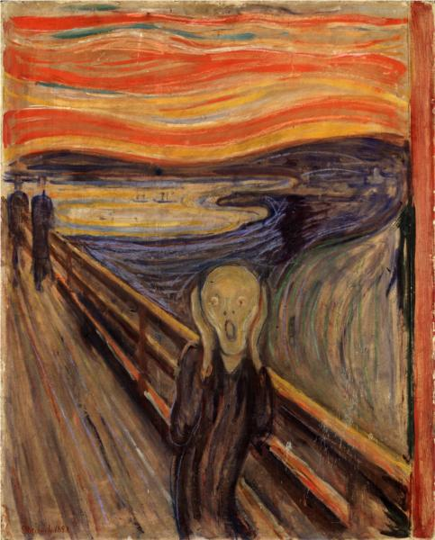

O Grito
Artista: Edvard Munch
Ano: 1893
Estilo: Expressionismo
Descrição: O Grito é uma das imagens mais conhecidas da arte ocidental. A pintura transmite uma sensação de angústia existencial, representada pela figura distorcida no centro da obra.
Curiosidade: Munch pintou várias versões de O Grito ao longo de sua vida. Esta versão expressa fortemente seu estado psicológico perturbado.